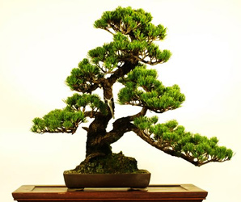

Що таке Бонсай
У буквальному перекладі з японської мови «Бон сай» означає «посадити в контейнер». Бонсай — це мистецтво вирощування та формування мініатюрних дерев, що відтворюють вигляд повноцінних дорослих дерев, але в зменшеному масштабі. Це японська традиція, яка існує понад тисячу років, і символізує гармонію природи та людини. Для створення бонсай використовуються спеціальні техніки обрізки, прищіпки, обмотування гілок та коренів, а також контрольований ріст за допомогою контейнерів. Основна мета — створити гармонійну і естетичну композицію, де дерево виглядає природно, але при цьому зберігається мініатюрність. Кожен бонсай унікальний, і його форма може відображати різні природні явища, такі як старі дерева, кам'янисті схили чи навіть шторми. Бонсай — це не просто декоративний елемент. Це процес, який вимагає терпіння, уваги до деталей та поваги до природи. Власники бонсай часто вважають свої дерева частиною своєї душі, адже догляд за ними перетворюється на медитативну практику
Історія походження
Існує легенда що першим «бонсаїстом» був китайський імператор династії Хань, який створив мініатюрну копію своєї імперії. Згідно з легендою там були мініатюрні гори, дерева, будинки й навіть річки. Згодом, у період середньовіччя, разом із буддизмом культура бонсай поширилася й у Японію де вкорінилося спочатку серед аристократів і духовенства, а потім, на початку 17 століття, і на національному рівні. У 18 столітті в Японії почали впроваджувати особливі техніки формування дерев, правила, норми, відділяти різноманітні стилі, а також проводити виставки на яких майстри ділилися своїми досягненнями. Найстарішою дієвою виставкою Японії є виставка бонсай у Токіо, яка вперше відбулась ще у 1914 році й кожен рік радує людей своїми неймовірними експонатами вже понад сто років поспіль. У 20 столітті, багатовікові традиції бонсай потрапили й на інші континенти. Перша виставка бонсай у Європі відбулася 1909 році в Лондоні. Як не дивно, але спочатку європейці досить погано ставилися до нового для себе мистецтва, вони вважали що це знущання з дерев. Проте після другої світової війни бонсай починає здобувати популярність на Заході. Багато дерев було привезено солдатами з Японії. Виникла потреба у спеціалізованій літературі про бонсай. Останнім часом популярність цього мистецтва неймовірно виросла. Дерева бонсай з'явились у магазинах, садових центрах, проте здебільшого це псевдобонсай — пеньки в'язів, дзелькви, фікуса чи кармони які обросли декількома гілочками. Знайти бонсай справжнього майстра майже нереально у магазині. На даний час існує велика кількість клубів бонсай майже у кожній країні світу.
Види Бонсай
-
За розміром:
- Mame bonsai (висота до 7 см);
- Mini bonsai (висота 7,1 – 10 см);
- Shohin bonsai (висота 10,1-20 см);
- Kifu bonsai (висота 20,1-35 см);
- Chuhin bonsai (висота 35,1-70 см);
- Ohgata bonsai (висота 70,1-120 см);
-
За місцем вирощування:
- Кімнатні;
- Вуличні;
-
За якістю:
- Виставкові екземпляри – бонсаї вищої якості;
- Комерційні екземпляри – бонсаї середнього рівня якості, здебільшого привезені з Азії;
- Бонсаї для початківців – це поки ще не сформовані бонсаї, які створені для навчання і подальшого вирощування та формування бонсай;
Догляд
Світло - бонсай потребує багато світла для кращого росту і активної життєдіяльності рослини. Якщо у вас не вистачає світла в приміщенні, то краще подбати про додаткове штучне флуоресцентне освітлення.
Вологість - дерево потребує високої вологості, тому бажано поставити контейнер на плоску підставку з водою, вода випаровуючись буде зволожувати дерево, також важлива циркуляція повітря зовні. Найчастіше відкривайте вікна на провітрювання.
Полив і добрива - небажано поливати Бонсай в регулярному режимі, так як полив даної рослини залежить від багатьох факторів (виду, складу грунту, клімату і т.д.). У кожному окремо взятому випадку полив індивідуальний. Спостерігайте уважно за своєю рослиною, і в міру висихання грунту, поливайте його. Не чекайте поки грунт висохне повністю. Полив повинен бути рясним, щоб вода добре зволожила кореневу систему, тому поливаючи, дочекайтеся поки вода почне виходити з дренажних відводів вашого контейнера. Ми також рекомендуємо використовувати грунтову суміш, яка довше затримує воду, а полив виробляти з лійки з насадкою-розпилювачем, щоб не вимивати грунт в контейнері.